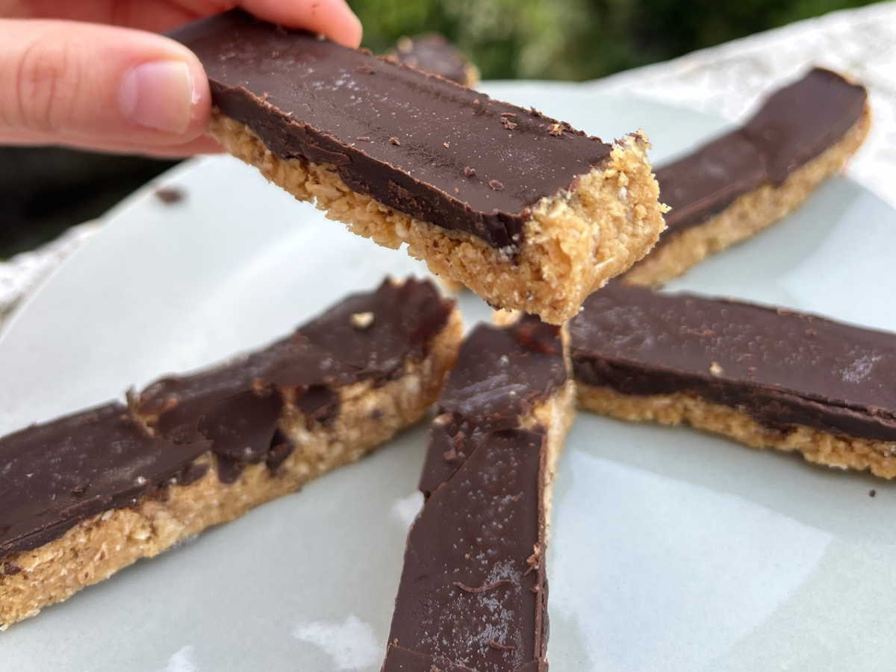

למי שרוצה לאכול בריא – בלי לוותר על מה שהיא אוהבת.
הצטרפי למטבח הבריא והשמח שלי.
הניסיון להיות בריאה הופך כל ארוחה לעונש של טעמים תפלים.
גוללת באינסטגרם ובאתרים, שומרת מתכונים... ובסוף אין לך באמת מה להכין.
קנית רכיבים יקרים, השקעת זמן, ובסוף המתכון נזרק לפח. מתסכל.
והכי קשה? להרגיש שצריך לוותר על האוכל שאת אוהבת כדי להיות בריאה.
פתאום באמצע החיים לא יכולתי יותר לאכול קמחים רגילים. המתכונים מהאינטרנט? פשוט לא היו טעימים.
הבנתי שאני לא מוכנה לבחור בין בריאות לבין טעם.
התחלתי לנסות, לשנות, לשפר. מתוך מאות ניסויים נולדו המתכונים האלה - אלה שעובדים. בכל פעם. ושבני המשפחה אוכלים ואומרים "זה טעים כמו רגיל!"

"הבריאות מתחילה במטבח שמח"
מעל 80 מתכונים מנצחים + מתכוני בסיס, טיפים והמלצות שלי. הכל מוסבר צעד אחר צעד – כדי שבאמת יצליח לך בפועל.
12 מאפים מלוחים
11 מנות עיקריות
10 מתכונים עם טופו
19 עוגות בריאות
15 נשנושים מתוקים
15 מתכוני חגים

מתוק ועשיר, פינוק אמיתי. חטיף אנרגיה מושלם שמרגיש כמו הממתק המוכר אבל בגרסה בריאה ומזינה יותר. הביס המושלם ליד הקפה.
את רוצה לשמור על הבריאות בלי להסתבך במטבח
יש לך רגישות לגלוטן, סוכרת או צורך תזונתי מיוחד
את מתגעגעת לדפדף בספר פיזי במקום במסך
נמאס לך ממתכונים שנראים טוב אבל יוצאים רע
חשוב לך שהאוכל יהיה טעים באמת לכל המשפחה
את רוצה שליטה מלאה על מה שנכנס לגוף שלך
ואם כרגע נוח לך רק בפורמט דיגיטלי –
קיימת גם גרסה דיגיטלית נפרדת למי שצריכה פתרון נגיש יותר
מהדורה מודפסת יוקרתית + עותק דיגיטלי
ספר אחד שיחליף לך עשרות מתכונים שלא עובדים